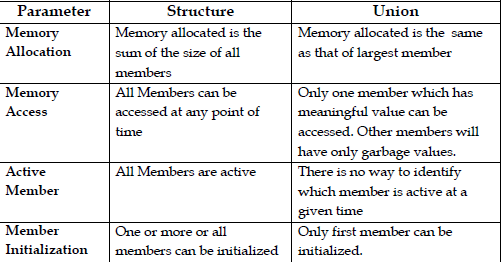

1. What is meant by data structure? Give some examples. (Remember)
Data Structure is a way of collecting and organizing data in such a way that we can perform operations on these data in an effective way. Data Structure is about rendering data elements in terms of some relationship, for better organization and storage.
Types of Data Structures:
- 1. Primitive Data Structure:Ex :int, float, char, Boolean
- 2. Abstract Data Structure:Linked List, Stack, Queue, Tree, Graph
2. What is meant by algorithm? (Remember)
An algorithm is any well-defined computational procedure that takes some value, or setof values, as input and produces some value, or set of values, as output. An algorithm is thus asequence of computational steps that transform input into output.
3. What is meant by time complexity and space complexity of an algorithm? (Remember)
-
Time complexity of an algorithm quantifies the amount of time taken by an algorithm to run as a function of the input. The time complexity of an algorithm is commonly expressed using big O notation.
-
Time complexity is commonly estimated by counting the number of elementary operations performed by the algorithm, where an elementary operation takes a fixed amount of time to perform.
-
Space complexity is a measure of the amount of working storage an algorithm needs with respect to the input size.
4. What is meant by primitive data structure? (Remember)
Aprimitive data structure is a basic data type provided by a programming language as a basic building block.The actual range of primitive data types available is dependent upon the specific programming language.
Classic basic primitive type includes:
- Character (character, char);
- Integer (integer, int, short, long, byte) with a variety of precisions;
- Floating-point number (float, double, real, double precision);
- Fixed-point number (fixed) with a variety of precisions and a programmer-selected scale.
- Boolean, logical values true and false.
- Reference (also called a pointer or handle), a small value referring to another object's address in memory, possibly a much larger one.
5. Write about asymptotic notations. (Remember)
Asymptotic Notations are languages that allow us to analyze an algorithm's running time by identifying its behavior as the input size for the algorithm increases. This is also known as an algorithm's growth rate.
- Upper Bounds: Big-O
- Lower Bounds: Omega
- Tight Bounds: Theta
6. Write the differences between structures and unions. (Analyse)

7. Write the difference between structures and arrays. (Analyse)
- Array elements are homogeneous. Structure elements are of different data type.
- Array allocates static memory and uses index / subscript for accessing elements of the array. Structures allocate dynamic memory and uses (.) operator for accessing the member of a structure.
- Array is a pointer to the first element of it. Structure is not a pointer
- Array element access takes less time in comparison with structures.
8. State the uses of pointers in C language. (Understand)
- Pointers increase the execution speed
- Pointers enable us to access a variable that is defined outside the function
- Pointers are more efficient in handling the data tables
- Pointers reduce the length and complexity of a program
- Use of pointer array for strings results in saving of data storage space in memory.
9. What is meant by recursion?(Remember)
A recursive function is defined as a function that calls itself to solve a smaller version of its task until a final call is made which does not require a call to itself. Every recursive function has two major cases, they are,
- Base Case: The problem is simple and can be solved directly without making further calls to same function.
- Recursive Case:
- Given problem is divided in to simpler sub parts
- Function calls itself with subparts of the problem obtained in first step.
- Result is obtained by combining solutions of simpler subparts.
Base case acts as the terminating condition. If it is not defined, then recursive function will generate infinite sequence of calls and will lead to error conditions.
10. State merits and demerits of recursive functions. (Understand)
- Advantages
- Recursive solution is shorter and simpler than non-recursive ones.
- It is a method to solve problems by solving easier instance of the same problem
- Code is clearer and easier to use.
- It follows divide and conquer strategy to solve problems.
- Disadvantages
- Sometimes, recursive solutions takes more memory and time to execute
- Difficult to find bugs if global variables are used in recursive functions
11. State the different types of recursive functions. (Remember)
- Direct Recursion
- Indirect Recursion
- Tail Recursion
- Linear Recursion
- Tree Recursion